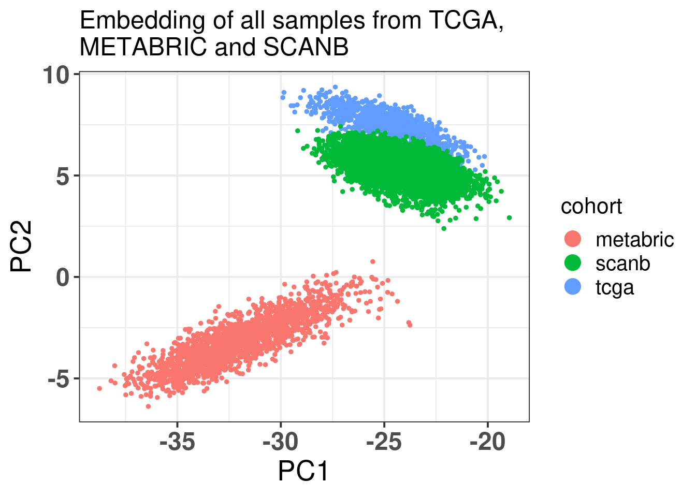
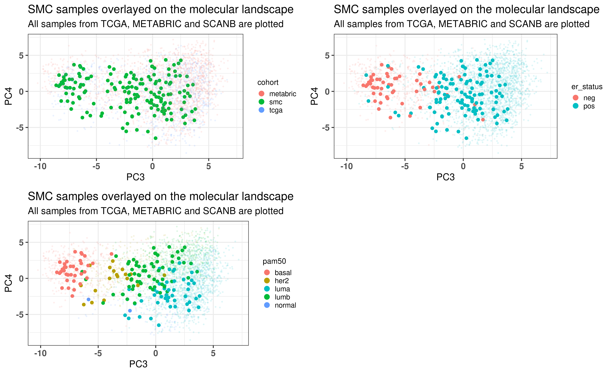

In the last chapters only TCGA and METABRIC samples were used in the training and testing of the PCA projection. To completely validate, we use another big cohort, SCANB, that was not used in the PCA fitting and testing before. This way we ensure that the embedding is independent of the cohort. Moreover, we use the SMC cohort (Kan et al. 2018), whose patients are from South Korea. We show how well it is embedded, and that is not dependent on population characteristics.
* The library is already synchronized with the lockfile.
3.1 SCANB embedding
The embedding was already calculate before when calculating the fit and tests, since the datasets were organized and loaded together. We also know already that all the 1044 genes are available in the SCANB cohort. SCANB is well mixed with all cohorts as Figure 3.1 shows.
Figure 3.1: PCA embedding colored by cohort. All samples from TCGA, METABRIC and SCANB were used.
Ideally there would be some overlap between SCANB and TCGA already in the first component. Moreover, if there isn’t, the cohort should be closer to TCGA than to METABRIC, due to technologies and normalization procedures, as both of them are log FPKM. Even though SCANB was processed in a way to get directly FPKM values, by using cufflinks, TCGA was normalized to get log FPKM as well, as discussed previously. Figure 3.2 shows how close SCANB is from TCGA, moreover there is already some overlap. The variability in the first component is bigger for METABRIC compared to TCGA and SCANB. Probably this is due to the technology processing, since they have genes in the same scale. Figure 2.22 contrasts the different normalization procedures. If genes are not scaled correctly, the PCA shows an inverse picture.

Figure 3.2: PCA embedding colored by cohort. The components used are the first and second components.
Figure 3.3 shows that the SCANB samples are also well mixed regarding the clinical factors, including the \(SET_{ER/PR}\) signature.
Figure 3.3: PCA embedding of all samples from TCGA, SCANB and METABRIC. (A) Colored by cohort, (B) colored by ER status, (C) colored by PAM50 molecular subtype, (D) colored by the \(SET_{ER/PR}\) signature and only SCANB samples.
3.2 Missing genes
Genes missing in publicly available datasets is very common. Usually this is due to processing pipelines or even data quality, therefore genes are removed. This should not be much of a problem, if the data is good enough, when calculating the qPCR-like normalization as it was shown before. The problem arises when multiplying the loadings obtained in the PCA with the normalized expression of the sample. If several genes are missing, 0s are added to the matrix and therefore the loadings for these genes cannot be used. Since 1000 genes were used, we investigate the loadings of genes and try to calculate a fuzziness score, indicating when the embedding should be trusted if genes are missing, and which genes are missing.
3.2.1 Fuzziness score
The idea of the fuzziness score is that we use the loadings of the missing genes and calculate the cumulative sum of their absolute values. The higher this value the more it indicates the missing genes are important. We start by removing random genes from random samples of the SCANB cohort. Each sample will have a random number of genes removed from the set of 1044 genes. Then two scores are calculated, one for PC2 and another for PC3. We also calculate the fuzziness score for the top loading genes and the low loadings genes, to compare these values.
We start by comparing the scores from top loadings and low loading genes. For this we remove the top 50 loadings and bottom 50 loadings, in terms of absolute values. Figure 3.4 shows the cumulative sum of the absolute values from the top and bottom loadings respectively. See how important the top loadings are compared to the bottom loadings. A way of thinking of this is that the top loadings weights are much more important when calculating the embedding.
Figure 3.4: Cumulative sum of absolute values for the top loadings and bottom loadings as a function of the number of selected genes.
This was using the top loadings, so probably the fuzziness score of a sample with relatively good data will be between 0 and 12 maximum, meaning that they have less than 200 genes missing. When genes are missing, we hope that they are in the bottom part of the loadings, so the fuzziness score is as small as possible.
Suppose now that the genes missing in a sample are random. We will calculate random fuzziness scores based on this to have a feeling of the scores.
Figure 3.5: Distribution of the fuzziness scores from random missing genes. Each color corresponds to a different distribution using a different number of genes.
Figure 3.5 shows the results as a function of the number of missing genes. We see that in average, if 200 genes are missing, the fuzziness score is around 5. If less than a 100 genes are missing, the fuzziness score is around 3. In the next section we show how this influences the position where the sample is projected into the embedding.
Finally, we calculate the fuzziness score as a number of top loadings missing. Suppose 150 genes are missing. We will change the proportion of genes that are in the top loadings and in the missing list. Since the cumulative sum for PC2 and PC3 are very similar, we focus only on PC2.
Figure 3.6: Distribution of the fuzziness scores from 150 random missing genes with different proportions of top loading genes in the list. Each color corresponds to a different distribution using a different proportion of genes.
Figure 3.6 shows the fuzziness score with different proportions of the top loading genes. We see that they are actually very important when calculating the score. The top loading genes were defined as the top 150 genes in the list. So when calculating the number of missing genes it is important to check the number of top loadings in the list.
3.2.2 Validating the score
In this section we calculate the embeddings with different number of genes missing from a given sample and then plot the original embedding with the newly one. For this we use samples from TCGA. The genes are removed even before the normalization procedure, as they are usually not available there. We select randomly a number of top genes from PC3 and PC4 to compose the list of missing genes. The proportion of the top loading genes is varied.
When looking at the figures above, it seems that whenever there are genes missing, and the more of top loadings they are, the closer they are to the origin. This makes sense, since PCA is doing a simple linear combination of the loadings. This should be fine to correct, since we can fit a line going through the origin and goes through the points above. Then the adjustment will depend on the number of genes that are missing and are top loadings. The more they are, the more adjustment we will need.
For the adjustment we only know two things, its current position and how many of the top loadings are missing. Based on this information we should be able to correct the samples. Given the list of genes that are missing, we fit lines that would go through the genes that are missing in the TCGA and METABRIC samples. We then try to find the line that is closes to the point. After performing the fit and the line, we can then move the point to closer to the METABRIC and TCGA samples. The point should be close to the line and close to points that have the same proportion of top loadings missing.
These plots show how the fuzziness score might be indicative of how good the embedding will be depending on the number of missing genes. The video below shows the images for 20 different patients. Notice how all of them are connected to the origin as well.
3.3 SMC embedding
By following the same procedures as previously, normalizing and getting the PC coordinates, Figure 3.13 shows the biplot of PC1 and PC2 when coloring by cohorts. The samples seem to be well mixed already in the RNA-seq samples. This is probably due to the fact that the SMC cohort has TPM values.
When checking the total number of genes missing, there are only 4 genes missing. And as seen before, this number is almost irrelevant, in the sense that the embedding will still be robust and locations will be precise enough.
Figure 3.13: Biplot of first two PCA components from SMC, TCGA, SCANB and METABRIC. SMC is highlighted in the plot and has a bigger dot.
As previously, Figure 3.14 shows the biplot of PC2 and PC3, highlighting the well mixing of the cohorts. When coloring by ER status, samples are in the right group. Molecular subtype is also correct. This cohort is special in the sense that there are more luminal B patients, as discussed in the paper. That is why there are more samples in the luminal B region.

Figure 3.14: PCA embedding of all samples from TCGA, SCANB and METABRIC including the SMC samples on top. (A) Colored by cohort, (B) colored by ER status, (C) colored by PAM50 molecular subtype.
Kan, Zhengyan, Ying Ding, Jinho Kim, Hae Hyun Jung, Woosung Chung, Samir Lal, Soonweng Cho, et al. 2018. “Multi-Omics Profiling of Younger Asian Breast Cancers Reveals Distinctive Molecular Signatures.”Nature Communications 9 (1). https://doi.org/10.1038/s41467-018-04129-4.
Source Code
# Validating the molecular landscapeIn the last chapters only TCGA and METABRIC samples were used in the trainingand testing of the PCA projection. To completely validate, we use anotherbig cohort, SCANB, that was not used in the PCA fitting and testing before.This way we ensure that the embedding is independent of the cohort. Moreover,we use the SMC cohort [@Kan2018], whose patients are from South Korea.We show how well it is embedded, and that is not dependent on population characteristics. ```{r setup}renv::restore()library(tidyverse)library(ggplot2)library(PCAtools)library(singscore)library(SummarizedExperiment)library(tximport)source("utils.R")source("first_run.R")# Here we are using rds files from previous chapters, so we source# in any case the load_rds_files.R and exclude all the associated files# that are generated in this current chaptername_document <-"validation"source("load_rds_files.R")# by setting the dev to png and pdf, this saves the figures in a specific# folder in both formats. moreover, since png is coming first, it shows# this figure when rendering the html. What is nice about this is that it# inherits the properties from the chunk to save the figure, so no need# to use ggplot2::ggsave to save the plots. this also works knitr::opts_chunk$set(dev =c('png', 'pdf', 'svg'))options(bitmapType ='cairo')```## SCANB embeddingThe embedding was already calculate before when calculating the fit andtests, since the datasets were organized and loaded together. We alsoknow already that all the 1044 genes are available in the SCANB cohort. SCANB is well mixed with all cohorts as @fig-pca-scanb shows.```{r}#| label: fig-pca-scanb#| fig-cap: PCA embedding colored by cohort. All samples from TCGA, METABRIC#| and SCANB were used. plot_pca_coordinates( df_pca_coordinates %>% dplyr::slice(1:n()),color ="cohort",x ="PC3",y ="PC4",size =1,base_size =10,title =paste0("Embedding of all samples from TCGA",", METABRIC and SCANB\n","Corrected METABRIC samples" )) + ggplot2::scale_color_viridis_d()```Ideally there would be some overlap between SCANB and TCGA already in the first component. Moreover, if there isn't, the cohort should be closerto TCGA than to METABRIC, due to technologies and normalization procedures,as both of them are log FPKM. Even though SCANB was processed in a way to get directly FPKM values, by using cufflinks, TCGA was normalized to getlog FPKM as well, as discussed previously. @fig-pca-scanb-pc1 showshow close SCANB is from TCGA, moreover there is already some overlap. The variability in the first component is bigger for METABRIC compared toTCGA and SCANB. Probably this is due to the technology processing, sincethey have genes in the same scale. @fig-pca-no-norm contrasts the differentnormalization procedures. If genes are not scaled correctly, the PCAshows an inverse picture.```{r}#| label: fig-pca-scanb-pc1#| fig-cap: PCA embedding colored by cohort. The components used are the#| first and second components.plot_pca_coordinates( df_pca_coordinates,color ="cohort",x ="PC1",y ="PC2",size =1,base_size =10,title =paste0("Embedding of all samples from TCGA",", METABRIC and SCANB" ))```@fig-pca-scanb-er-pam50 shows that the SCANB samples are also well mixedregarding the clinical factors, including the $SET_{ER/PR}$ signature.```{r, fig.width=20, fig.height=14}#| label: fig-pca-scanb-er-pam50#| fig-cap: PCA embedding of all samples from TCGA, SCANB and METABRIC.#| (A) Colored by cohort,#| (B) colored by ER status, (C) colored by PAM50 molecular subtype,#| (D) colored by the $SET_{ER/PR}$ signature and only SCANB samples.size <-2base_size <-18plots_with_scanb <-sapply(c("cohort", "er_status", "pam50", "SET_ERPR"), plot_pca_coordinates,df_pca = df_pca_coordinates %>% dplyr::filter( pam50 %in%c("luma", "lumb", "basal", "her2", "normal") ),x ="PC3", y ="PC4",size = size,base_size = base_size,title =paste0("Embedding of all samples from TCGA",", METABRIC and SCANB" ),USE.NAMES =TRUE, simplify =FALSE)plots_with_scanb$er_status <- plots_with_scanb$er_status + ggplot2::scale_color_viridis_d() + ggplot2::labs(color ="ER status")plots_with_scanb$SET_ERPR <- df_pca_coordinates %>% dplyr::filter(cohort %in%c("scanb")) %>% ggplot2::ggplot(aes_string(x ="PC3", y ="PC4", z ="SET_ERPR")) + ggplot2::stat_summary_hex(bins =25) + ggplot2::scale_fill_viridis_c() + ggplot2::labs(title ="Embedding of SCANB only",fill =expression(SET[ER/PR]) ) + ggplot2::theme_bw(base_size = base_size)cowplot::plot_grid(plotlist = plots_with_scanb,ncol =2,labels ="AUTO")```## Missing genesGenes missing in publicly available datasets is very common. Usually this isdue to processing pipelines or even data quality, therefore genes are removed.This should not be much of a problem, if the data is good enough, when calculating the qPCR-like normalization as it was shown before. The problemarises when multiplying the loadings obtained in the PCA with the normalized expression of the sample. If several genes are missing, 0s are added to the matrix and therefore the loadings for these genes cannot be used. Since 1000 genes were used, we investigate the loadings of genes and try to calculate a fuzziness score, indicating when the embedding shouldbe trusted if genes are missing, and which genes are missing. ### Fuzziness score The idea of the fuzziness score is that we use the loadings of the missinggenes and calculate the cumulative sum of their absolute values. The higher this valuethe more it indicates the missing genes are important. We start byremoving random genes from random samples of the SCANB cohort. Each samplewill have a random number of genes removed from the set of 1044 genes. Then two scores are calculated, one for PC2 and another for PC3. We alsocalculate the fuzziness score for the top loading genes and the low loadings genes, to compare these values.We start by comparing the scores from top loadings and low loading genes. Forthis we remove the top 50 loadings and bottom 50 loadings, in terms ofabsolute values. @fig-loadings-top-bottom shows the cumulative sumof the absolute values from the top and bottom loadings respectively. See how important the top loadings are compared to the bottom loadings. A way ofthinking of this is that the top loadings weights are much more importantwhen calculating the embedding.```{r}#| label: fig-loadings-top-bottom#| fig-cap: Cumulative sum of absolute values for the top loadings and#| bottom loadings as a function of the number of selected genes.which_loadings <-c("PC3", "PC4")n <-200top_or_bottom <-c("top", "bottom")fuzziness_scores_top <-sapply(1:n,function(n, pca_fit){ top_loadings <-apply( pca_fit$loadings[, which_loadings],2,function(x, gene_names){ gene_names[order(abs(x), decreasing =TRUE)[1:n]] },gene_names =rownames(pca_fit$loadings) )get_fuzziness_score(top_loadings, pca_fit, which_pcs =3:4) },pca_fit = pca_fit) %>% t %>% data.frame %>%`colnames<-`(which_loadings) %>% dplyr::mutate(n =1:n())fuzziness_scores_bottom <-sapply(1:n,function(n, pca_fit){ top_loadings <-apply( pca_fit$loadings[, which_loadings],2,function(x, gene_names){ gene_names[order(abs(x), decreasing =FALSE)[1:n]] },gene_names =rownames(pca_fit$loadings) )get_fuzziness_score(top_loadings, pca_fit) },pca_fit = pca_fit) %>% t %>% data.frame %>%`colnames<-`(which_loadings) %>% dplyr::mutate(n =1:n())fuzziness_scores <- dplyr::bind_rows(list(top = fuzziness_scores_top, bottom = fuzziness_scores_bottom),.id ="top_or_bottom") %>% dplyr::mutate(top_or_bottom =factor(top_or_bottom, levels =c("top", "bottom")))fuzziness_scores %>% tidyr::pivot_longer(cols = dplyr::all_of(which_loadings),names_to ="PC",values_to ="fuzziness_score") %>% ggplot2::ggplot(aes(x = n, y = fuzziness_score, color = PC)) + ggplot2::geom_line(size =3, alpha =0.5) + ggplot2::scale_color_viridis_d() + ggplot2::facet_wrap(~top_or_bottom) + ggplot2::labs(x ="Number of genes",y ="Fuzziness score",color ="Principal\ncomponent" ) + ggplot2::theme_bw(base_size =15) + ggplot2::theme(legend.position =c(0.65, 0.8))```This was using the top loadings, so probably the fuzziness score of a samplewith relatively good data will be between 0 and 12 maximum, meaning thatthey have less than 200 genes missing. When genes are missing, we hope thatthey are in the bottom part of the loadings, so the fuzziness scoreis as small as possible. Suppose now that the genes missing in a sample are random. We will calculaterandom fuzziness scores based on this to have a feeling of the scores. ```{r, eval = first_run}nb_of_genes <-seq(from =2, to =220, by =20)list_of_random_genes <-lapply( nb_of_genes,function(n, genes){sapply(1:1000,function(x, genes, n){sample(genes, size = n) },genes = genes,n = n,simplify =FALSE ) },genes =rownames(pca_fit$loadings))fuzziness_scores_random <-lapply( list_of_random_genes,function(list_genes, pca_fit){sapply( list_genes, get_fuzziness_score,pca_fit = pca_fit ) %>% t %>% data.frame %>%`colnames<-`(which_loadings) },pca_fit = pca_fit) %>%`names<-`(paste0("#", nb_of_genes)) %>% dplyr::bind_rows(., .id ="nb_genes") %>% dplyr::mutate(nb_genes =factor( nb_genes,levels =paste0("#", nb_of_genes) ) ) %>% tidyr::pivot_longer( which_loadings,names_to ="PC",values_to ="fuzziness_score" )saveRDS( fuzziness_scores_random,"../results/rds_files/validation/fuzziness_scores_random.rds")``````{r}#| label: fig-fuzziness-random#| fig-cap: Distribution of the fuzziness scores from random missing genes.#| Each color corresponds to a different distribution using a different#| number of genes.fuzziness_scores_random %>% dplyr::filter(PC =="PC3") %>% ggplot2::ggplot(aes(x = fuzziness_score, fill = nb_genes)) + ggplot2::geom_histogram(position ="identity", bins =30, alpha =0.7) + ggplot2::scale_fill_viridis_d() + ggplot2::labs(x ="Fuzziness score",y ="Count",title ="Distribution of fuzziness score as a function of the number\nof genes missing",subtitle ="Only PC2 fuzziness scores",fill ="# missing\ngenes" ) + ggplot2::theme_bw()```@fig-fuzziness-random shows the results as a function of the number of missinggenes. We see that in average, if 200 genes are missing, the fuzzinessscore is around 5. If less than a 100 genes are missing, the fuzzinessscore is around 3. In the next section we show how this influences theposition where the sample is projected into the embedding.Finally, we calculate the fuzziness score as a number of top loadings missing. Suppose 150 genes are missing. We will change the proportionof genes that are in the top loadings and in the missing list. Sincethe cumulative sum for PC2 and PC3 are very similar, we focus only onPC2.```{r}#| label: fig-fuzziness-random-top#| fig-cap: Distribution of the fuzziness scores from 150 random missing genes#| with different proportions of top loading genes in the list.#| Each color corresponds to a different distribution using a different#| proportion of genes.nb_genes <-150proportions <-seq(0, 1, by =0.1)gene_names <-rownames(pca_fit$loadings)which_pcs <-c(3)top_loadings_genes <- gene_names[order(abs(pca_fit$loadings[, which_pcs]), decreasing =TRUE)[1:nb_genes]]proportions_top_fuzziness <-lapply( proportions,function(prop, gene_names, top_loadings_genes, pca_fit, nb_genes){ nb_genes_top <-floor(prop * nb_genes) nb_genes_non_top <-floor((1- prop) * nb_genes)# run the fuzziness several times to get a distribution based on# the proportions list_genes <-sapply(1:1000,function( i, genes_top, genes_non_top, nb_genes_top, nb_genes_non_top, pca_fit ){get_fuzziness_score(c(sample(genes_top, size = nb_genes_top),sample(genes_non_top, size = nb_genes_non_top) ), pca_fit,which_pcs = which_pcs ) },genes_top = top_loadings_genes,genes_non_top =setdiff(gene_names, top_loadings_genes),nb_genes_top = nb_genes_top, nb_genes_non_top,pca_fit = pca_fit ) %>% data.frame %>%`colnames<-`(paste0("PC", which_pcs)) },gene_names = gene_names,top_loadings_genes = top_loadings_genes,pca_fit = pca_fit,nb_genes = nb_genes) %>%`names<-`(paste0(proportions)) %>% dplyr::bind_rows(., .id ="proportions") %>% tidyr::pivot_longer(cols =paste0("PC", which_pcs),names_to ="PC",values_to ="fuzziness_score" )proportions_top_fuzziness %>% ggplot2::ggplot(aes(x = fuzziness_score, fill = proportions) ) + ggplot2::geom_histogram(alpha =0.7, bins =30, position ="identity") + ggplot2::scale_fill_viridis_d() + ggplot2::labs(x ="Fuzziness score",y ="Count",title =paste0("Distribution of fuzziness score as a function of the\nproportion ","of the top loading genes in the list of missing genes" ),subtitle ="Only PC3 fuzziness scores",fill ="Proportion of\ntop genes" ) + ggplot2::theme_bw()```@fig-fuzziness-random-top shows the fuzziness score with different proportionsof the top loading genes. We see that they are actually very important whencalculating the score. The top loading genes were defined as the top 150 genesin the list. So when calculating the number of missing genes it is importantto check the number of top loadings in the list. ### Validating the scoreIn this section we calculate the embeddings with different number of genesmissing from a given sample and then plot the original embedding withthe newly one. For thiswe use samples from TCGA. The genes are removed even before the normalization procedure, as they are usually notavailable there. We select randomly a number of top genes from PC3 and PC4to compose the list of missing genes. The proportion of the top loadinggenes is varied. ```{r, eval = first_run}nb_genes <-200proportions <-seq(0, 1, by =0.05)gene_names <-rownames(pca_fit$loadings)which_pcs <-3:4top_loadings_genes_random <-sapply( which_pcs,function(pc, gene_names, pca_fit, nb_genes){ gene_names[order(abs(pca_fit$loadings[, paste0("PC", pc)]), decreasing =TRUE )[1:nb_genes]] },gene_names = gene_names,pca_fit = pca_fit,nb_genes = nb_genes)saveRDS( top_loadings_genes_random,"../results/rds_files/validation/top_loadings_genes_random.rds")# we select a number of samples since it is not necessary to run# the analysis on all samples, but we want a representative sampling# so any sampling should suffice for the analysisset.seed(2039)samples_to_use <-sample(colnames(datasets$tcga), size =200)genes_proportions_top <-lapply( proportions,function(prop, gene_names, top_loadings_genes, pca_fit, nb_genes){ nb_genes_top <-floor(prop * nb_genes) nb_genes_non_top <-floor((1- prop) * nb_genes)# run the fuzziness several times to get a distribution based on# the proportions list_genes <-lapply(1:10,function( i, genes_top, genes_non_top, nb_genes_top, nb_genes_non_top ){c(sample(genes_top, size = nb_genes_top),sample(genes_non_top, size = nb_genes_non_top) ) },genes_top = top_loadings_genes,genes_non_top =setdiff(gene_names, top_loadings_genes),nb_genes_top = nb_genes_top, nb_genes_non_top ) },gene_names = gene_names,top_loadings_genes = top_loadings_genes_random,nb_genes = nb_genes) %>%`names<-`(paste0(proportions))saveRDS( samples_to_use,"../results/rds_files/validation/samples_to_use.rds")saveRDS( genes_proportions_top,"../results/rds_files/validation/genes_proportions_top.rds")fuzziness_scores_random_top <-rapply( genes_proportions_top, get_fuzziness_score,pca_fit = pca_fit,how ="list")saveRDS( fuzziness_scores_random_top,"../results/rds_files/validation/fuzziness_scores_random_top.rds")pca_coords_random <- parallel::mclapply( genes_proportions_top,function( lists_genes, sum_exp, pca_fit, assay_to_use, stable_genes, most_variable_genes ){# for each list of gene, remove the provided genes and proceed# with the whole pipeline for all samples selectedlapply( lists_genes,function( genes_to_remove, sum_exp, pca_fit, assay_to_use, stable_genes, most_variable_genes ){# remove genes sum_exp <- sum_exp[setdiff(rownames(sum_exp), genes_to_remove),]# now proceed with the normalization pipeline and PC retrieval sum_exp <-get_final_ranking_values( sum_exp, assay_to_use, stable_genes, most_variable_genes ) pca_coords <-get_pca_coordinates(sum_exp, pca_fit) pca_coords[, paste0("PC", 1:10)] },sum_exp = sum_exp, pca_fit = pca_fit, assay_to_use = assay_to_use, stable_genes = stable_genes, most_variable_genes = most_variable_genes ) },sum_exp = datasets$tcga[, samples_to_use],pca_fit = pca_fit, assay_to_use ="logFPKM_TMM", stable_genes = stable_genes, most_variable_genes =setdiff(genes_for_pca, stable_genes),mc.cores =11)saveRDS( pca_coords_random,"../results/rds_files/validation/pca_coords_random.rds")get_pca_random_genes <-function( use_sample, og_pca, pca_coords_random, fuzziness_scores_random,which_pcs =paste0("PC", 1:10)){# for each proportion, extract the coordinates pca_coords <-lapply( pca_coords_random,function(x){sapply( x,function(y) y[use_sample, which_pcs] ) %>% t %>% data.frame } ) %>% dplyr::bind_rows(., .id ="proportion") %>% data.frame fuzziness_scores <-lapply( fuzziness_scores_random,function(x){sapply( x,function(y) y ) %>% t %>% data.frame } ) %>% dplyr::bind_rows(., .id ="proportion") %>% data.frame dplyr::bind_rows(list(random = pca_coords,original = og_pca %>% dplyr::filter(sample_name == use_sample) %>% dplyr::select(all_of(which_pcs)) %>% dplyr::mutate(proportion ="all_genes") %>% data.frame %>% .[, colnames(pca_coords)] ),.id ="embedding" )}pca_random_genes_patients <-sapply( samples_to_use, get_pca_random_genes, og_pca = df_pca_coordinates,pca_coords_random = pca_coords_random, fuzziness_scores_random = fuzziness_scores_random_top,which_pcs =paste0("PC", 3:4),USE.NAMES =TRUE, simplify =FALSE)saveRDS( pca_random_genes_patients,"../results/rds_files/validation/pca_random_genes_patients.rds")``````{r}plots_random_genes <-sapply( samples_to_use, plot_pca_random_genes,pca_random_genes_patients = pca_random_genes_patients,df_pca_coordinates = df_pca_coordinates,USE.NAMES =TRUE, simplify =FALSE)```::: {.panel-tabset}```{r}patient_name <- samples_to_use[10]```#### `r patient_name````{r, fig.width=8, fig.height=5}#| label: fig-missing-correction-10plots_random_genes[[patient_name]]``````{r}patient_name <- samples_to_use[20]```#### `r patient_name````{r, fig.width=8, fig.height=5}#| label: fig-missing-correction-20plots_random_genes[[patient_name]]``````{r}patient_name <- samples_to_use[50]```#### `r patient_name````{r, fig.width=8, fig.height=5}#| label: fig-missing-correction-50plots_random_genes[[patient_name]]``````{r}patient_name <- samples_to_use[80]```#### `r patient_name````{r, fig.width=8, fig.height=5}#| label: fig-missing-correction-80plots_random_genes[[patient_name]]``````{r}patient_name <- samples_to_use[182]```#### `r patient_name````{r, fig.width=8, fig.height=5}#| label: fig-missing-correction-182plots_random_genes[[patient_name]]``````{r}patient_name <- samples_to_use[198]```#### `r patient_name````{r, fig.width=8, fig.height=5}#| label: fig-missing-correction-198plots_random_genes[[patient_name]]```:::When looking at the figures above, it seems that whenever there are genes missing,and the more of top loadings they are, the closer they are to the origin.This makes sense, since PCA is doing a simple linear combination of the loadings.This should be fine to correct, since we can fit a line going through the origin and goes through the points above. Then the adjustment will dependon the number of genes that are missing and are top loadings. The more they are, the more adjustment we will need. For the adjustment we only know two things, its current position and how many of the top loadings are missing. Based on this information weshould be able to correct the samples. Given the list of genes that are missing,we fit lines that would go through the genes that are missing in the TCGAand METABRIC samples. We then try to find the line that is closes to the point.After performing the fit and the line, we can then move the point to closerto the METABRIC and TCGA samples. The point should be close to the lineand close to points that have the same proportion of top loadings missing.```{r, eval = first_run}folder_to_save <-paste0("../results/plots/validation/random_loadings/")dir.create( folder_to_save, showWarnings =FALSE, recursive =TRUE)fig_width <-8fig_height <-5sapply(1:20,function(i, final_plots){ggsave(filename =paste0( folder_to_save, "/", ifelse(i <10, paste0("0",i), i), ".png" ),plot = final_plots[[i]],width = fig_width,height = fig_height, dpi =320 ) },final_plots = plots_random_genes)# we then proceed to generate a gif by using the following command:# ffmpeg -framerate 1 -pattern_type glob -i 'random_loadings/*.png' random_loadings.mp4```These plots show how the fuzziness score might be indicative of howgood the embedding will be depending on the number of missing genes. Thevideo below shows the images for 20 different patients. Notice how all ofthem are connected to the origin as well.```{r, eval = !first_run, results = 'asis', echo = FALSE}embedding_video <-paste0('<iframe width="720" height="480" ','src="../plots/validation/random_loadings.mp4" ','align="middle" frameborder="0" allowfullscreen></iframe>')cat(embedding_video)```## SMC embeddingBy following the same procedures as previously, normalizing and gettingthe PC coordinates, @fig-smc-cohort shows the biplot of PC1 and PC2when coloring by cohorts. The samples seem to be well mixed already inthe RNA-seq samples. This is probably due to the fact that the SMC cohorthas TPM values. ```{r, eval = first_run}clin_data_smc <-read.table("../data/2018_SMC/data_clinical_sample.txt",sep ="\t",header =TRUE) %>% dplyr::filter(!is.na(PAM50_SUBTYPE)) %>% dplyr::mutate(pam50 =tolower(PAM50_SUBTYPE) ) %>% dplyr::mutate(pam50 = stringr::str_replace_all(pam50, "luminal", "lum") ) %>%`rownames<-`(.$SAMPLE_ID) %>% dplyr::mutate(sample_name = SAMPLE_ID)smc_df <-read.table("../data/2018_SMC/data_mrna_seq_tpm.txt",sep ="\t",header =TRUE) %>% dplyr::filter(!duplicated(Hugo_Symbol)) %>% dplyr::mutate(Entrez_Gene_Id =NULL) %>%`rownames<-`(.$Hugo_Symbol) %>% dplyr::mutate(Hugo_Symbol =NULL)smc_df <- smc_df[, rownames(clin_data_smc)]# almost all genes are available, only 4 are missingsmc_df <- SummarizedExperiment::SummarizedExperiment(assays =list("tpm"= smc_df,"logtpm"=log2(smc_df +0.01) ),colData = clin_data_smc)# get the normalization performed smc_normalized <-get_final_ranking_values(sum_exp = smc_df,assay_to_use ="logtpm",stable_genes = stable_genes,most_variable_genes =setdiff(rownames(pca_fit$loadings), stable_genes))# calculate the embeddingsmc_df_pca <-get_pca_coordinates(smc_normalized, pca_fit) %>% dplyr::bind_cols( ., colData(smc_normalized) %>% data.frame %>% dplyr::mutate(er_status =ifelse(str_detect(IHC_SUBTYPE, "ER\\+"), "pos", "neg" ) ) %>% dplyr::mutate(cohort ="smc") ) %>% dplyr::bind_rows(., df_pca_coordinates)# save all the resultssaveRDS( smc_df,"../results/rds_files/validation/smc_df.rds")saveRDS( smc_df_pca %>% data.frame,"../results/rds_files/validation/smc_df_pca.rds")saveRDS( smc_normalized,"../results/rds_files/validation/smc_normalized.rds")```When checking the total number of genes missing, there are only `r nrow(datasets_normalized$tcga) - nrow(smc_normalized)` genes missing. And as seen before, this number is almost irrelevant, in the sense thatthe embedding will still be robust and locations will be precise enough.```{r}#| label: fig-smc-cohort#| fig-cap: Biplot of first two PCA components from SMC, TCGA, SCANB and #| METABRIC. SMC is highlighted in the plot and has a bigger dot.smc_df_pca %>% ggplot2::ggplot(aes(x = PC1, y = PC2, color = cohort) ) + ggplot2::geom_point(aes(alpha = cohort, size = cohort)) + ggplot2::scale_size_manual(values =c("smc"=2, "tcga"=1,"scanb"=1,"metabric"=1 )) + ggplot2::scale_alpha_manual(values =c("smc"=1, "tcga"=0.1,"scanb"=0.1,"metabric"=0.1 )) + ggplot2::labs(color ="Cohort",alpha ="Cohort",size ="Cohort",title =paste0("First two components of SMC overlayed on all the three\n","big cohorts in the the molecular landscape" ),subtitle ="All samples from TCGA, METABRIC and SCANB are plotted" ) + ggplot2::theme_bw(base_size =10)```As previously, @fig-pca-smc-er-pam50 shows the biplot of PC2 and PC3, highlighting the well mixing of the cohorts. When coloring by ER status,samples are in the right group. Molecular subtype is also correct. Thiscohort is special in the sense that there are more luminal B patients,as discussed in the paper. That is why there are more samples in the luminal B region.```{r, fig.width=18, fig.height=11}#| label: fig-pca-smc-er-pam50#| fig-cap: PCA embedding of all samples from TCGA, SCANB and METABRIC including#| the SMC samples on top.#| (A) Colored by cohort,#| (B) colored by ER status, (C) colored by PAM50 molecular subtype.plots_smc <-sapply(c("cohort", "er_status", "pam50"), get_plot_new_samples,name_cohort ="smc",df_pca = smc_df_pca %>% dplyr::filter(cohort !="scanb"),x ="PC3",y ="PC4",USE.NAMES =TRUE, simplify =FALSE)cowplot::plot_grid(plotlist = plots_smc, labels ="AUTO")```